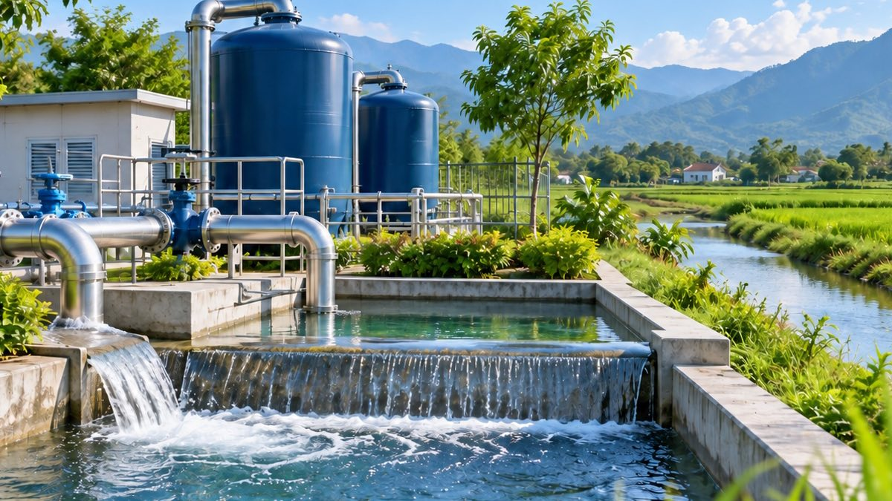

VIETWATER 2019 — triển lãm quốc tế ngành nước tổ chức tại Hà Nội

Cuối tháng 7/2019, Hà Nội là nơi diễn ra một trong những triển lãm chuyên ngành cấp thoát nước có quy mô lớn tại Việt Nam — VIETWATER 2019, sự kiện thường niên dành cho lĩnh vực cấp nước, thoát nước, lọc nước và xử lý nước thải. Đây là năm thứ 11 sự kiện này được tổ chức tại Việt Nam.
Thời gian và địa điểm
Triển lãm diễn ra từ ngày 24 đến 26/7/2019 tại Trung tâm Hội chợ Triển lãm Quốc tế (ICE), Hà Nội. Cùng thời điểm, một kỳ triển lãm tương tự cũng được tổ chức tại TP. Hồ Chí Minh.
Đơn vị tổ chức
Hội Cấp thoát nước Việt Nam (VWSA) — đơn vị trực thuộc Bộ Xây dựng — giữ vai trò chủ trì, phối hợp cùng Informa Markets Vietnam (đơn vị tổ chức), UBM Asia và Tạp chí điện tử Môi trường và Đô thị Việt Nam.
Ban tổ chức kỳ vọng đón khoảng 7.000 lượt khách tham quan trong ba ngày diễn ra sự kiện.
Quy mô và nội dung
- Hàng trăm gian hàng của doanh nghiệp đến từ nhiều quốc gia và vùng lãnh thổ như Đài Loan, Hàn Quốc, Thái Lan, Trung Quốc và Việt Nam.
- Giới thiệu công nghệ lọc nước, xử lý nước thải và thiết bị mới cho ngành cấp thoát nước.
- Hội thảo khoa học "Quản lý nước hướng tới mục tiêu phát triển bền vững", tổ chức ngày 25/7 tại Hà Nội.
- Kết nối giao thương giữa doanh nghiệp trong nước và quốc tế.
Ý nghĩa với ngành cấp nước trong nước
Đại diện ban tổ chức nhìn nhận đây là dịp quan trọng để doanh nghiệp trong ngành giao lưu, học hỏi kinh nghiệm lẫn nhau và tiếp cận công nghệ mới. Với các đơn vị cấp nước tại địa phương, những triển lãm chuyên ngành như VIETWATER cũng là cơ hội để cập nhật xu hướng công nghệ và tham khảo giải pháp xử lý nước phù hợp với điều kiện thực tế.